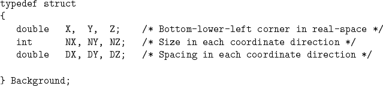
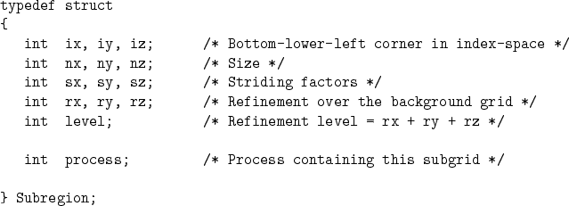
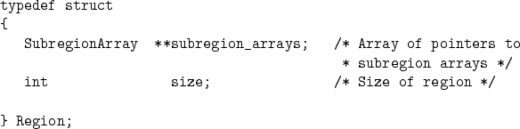
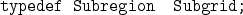
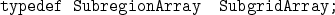
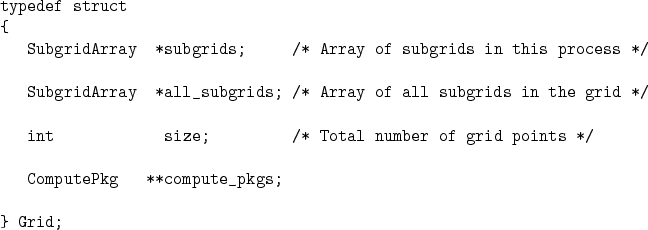

Many of the components in the following structures relate intuitively to the discussion in 7. We will discuss here only those components which need explanation.

There is only one Background structure currently in . It is currently global.

The process component of the Subregion structure is intended to associate a subregion with a particular process. However, it is often times not used, and may be replaced in the future by some other mechanism for achieving this task.





The subgrids component of the Grid structure above, is a subgrid-array of subgrids associated with my process. The all_subgrids component is a subgrid-array of all subgrids in the grid. It is important to note that subgrids contains pointers into all_subgrids. The compute_pkgs component is an array of pointers to ComputePkg structures. This structure is related to communications within and really should not appear in the Grid structures. Hopefully, this we be fixed at some point in the future.